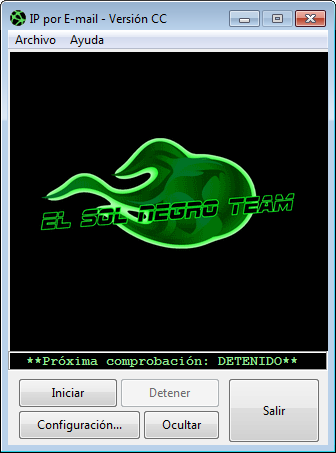

IP por E-mail
No todos confiamos en servicios en la nube a la hora de acceder a nuestros datos.
Tampoco puedes, a veces, permitirte un servicio VPN para conectar con tu ordenador bajo un servicio económico de IP estática. Los servicios VPN de pago pueden ser muy efectivos, pero también realmente costosos, sobre todo en aquellos países con grandes índices de inflación, lo que convierte unos pocos dólares, en un verdadero presupuesto. También existen servicios VPN gratuitos, pero varios de ellos no son del todo fiables.
Esta es la sencilla solución que brinda "IP por E-mail" en sus distintas versiones. Es capaz de detectar la nueva dirección IP pública cada 6, 12 o 24 hs. y enviarla a la dirección de correo electrónico que se prefiera. Con la configuración adecuada de tu ordenador podrás conectarte a él por SSH, FTP, o aquellos juegos que así lo permitan ("Minecraft" Mojang © 2009-2017. solo por poner un ejemplo).
Otra de las características que hace a "IP por E-mail" una buena solución es su disponibilidad en las plataformas de GNU/Linux y Windows. Además de presentarse en dos versiones para cada plataforma:
{kind=link}
{kind=link}
{kind=link}
{kind=link}